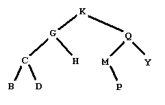
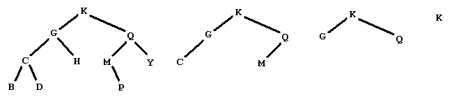

Figure 1
Figure 1 shows a graphical representation of a binary tree of letters. People familiar with binary trees can skip over the definitions of a binary tree of letters, leaves of a binary tree, and a binary search tree of letters, and go right to The problem.
A binary tree of letters may be one of two things:
In the graphical representation of a binary tree of letters:
A leaf in a binary tree is a node whose subtrees are both empty. In the example in Figure 1, this would be the five nodes with data B, D, H, P, and Y.
The preorder traversal of a tree of letters satisfies the defining properties:
The preorder traversal of the tree in Figure 1 is KGCBDHQMPY.
A tree like the one in Figure 1 is also a binary search tree of letters. A binary search tree of letters is a binary tree of letters in which each node satisfies:
The problem:
Consider the following sequence of operations on a binary search tree of letters
Remove the leaves and list the data removed
Repeat this procedure until the tree is empty
Starting from the tree below on the left, we produce the sequence of trees shown, and then the empty tree

by removing the leaves with data
BDHPY
CM
GQ
K
Your problem is to start with such a sequence of lines of leaves from a binary search tree of letters and output the preorder traversal of the tree.
The input file will contain one or more data sets. Each data set is a sequence of one or more lines of capital letters. The lines contain the leaves removed from a binary search tree in the stages described above. The letters on a line will be listed in increasing alphabetical order. Data sets are separated by a line containing only an asterisk ('*'). The last data set is followed by a line containing only a dollar sign ('$'). There are no blanks or empty lines in the input.
For each input data set, there is a unique binary search tree that would produce the sequence of leaves. The output is a line containing only the preorder traversal of that tree, with no blanks.
BDHPY CM GQ K * AC B $
KGCBDHQMPY BAC